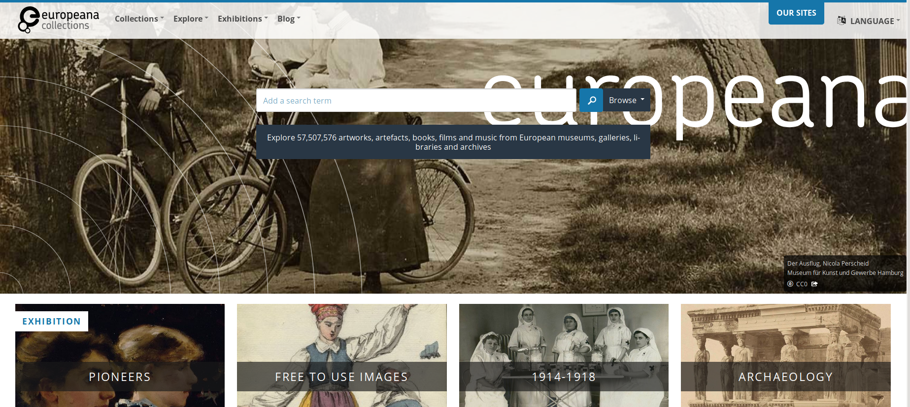
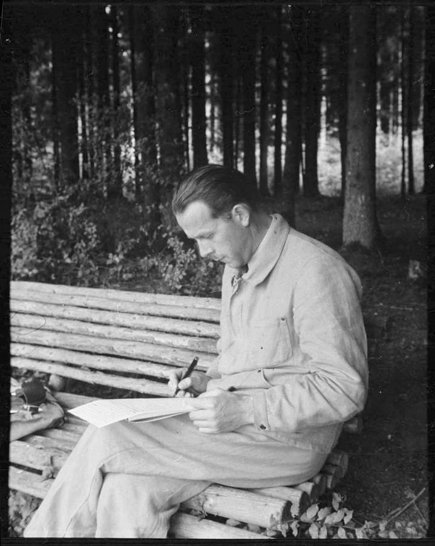

L'édition scientifique numérique.
Modèles et perspectives de recherche
Elena Spadini (Université de Lausanne)
Presentation online at: elespdn.github.io/talks/20191022_FDI_Lausanne/20191022_FDI_Lausanne.html
Table of contents
- Changement de paradigme ?
- Éditions numériques
- Definitions
- Exemples
- Outils
- Software studies et DH tool criticism
- Exemples
- Conclusions
1. Changement de paradigme ?
2. Éditions scientifiques numériques
Definitions
Édition scientifique
Scholarly edition
Elle rend compte de la transmission d'une œuvre et/ou de sa genèse, et des circonstances de sa rédaction.
L'édition critique est généralement commentée grâce à des notes, des introductions, etc.
Édition scientifique numérique
Scholarly Digital Edition
Une édition numérique ne peut pas être convertie dans une édition papier sans une perte substantielle de contenu ou de fonctionnalité


Patrick Sahle, Digitale Editionsformen, Zum Umgang mit der Überlieferung unter den Bedingungen des Medienwandels, 3 Bände, Norderstedt: Books on Demand 2013
Digital scholarly editions are not just scholarly editions in digital media: digital ≠ digitized
"Wiedergabe ohne Erschließung ist keine Edition. Eine bloße Reproduktion, ein einfaches Faksimile, eine digitale Bibliothek ist keine Edition"
"Deshalb kann eine digitale Edition nicht einfach die digitale Fassung einer auch im Druck realisierbaren Edition sein – zu ihrem Wesen gehört, dass sie über die Beschränkungen der typografischen Edition hinweggeht"
(Sahle 2016/2: 141-142; 149)
A digital edition can not be printed without a loss of information and/or functionality
"Eine digitale Edition ist dadurch bestimmt, dass sie nicht ohne wesentliche Informations- und Funktionsverluste in eine typografi sche Form gebracht werden kann – und in diesem Sinne über die druckbare Edition hinausgeht."
(Sahle 2016/2: 149)
Catalogues
- Patrick Sahle, A catalogue Digital Scholarly Editions
- Greta Franzini, Catalogue Digital Editions
Compte rendues and criteria
- MLA (Modern Language Association), White Paper of the MLA’s Committee on Scholarly Editions
- IDE, RIDE. A review journal for digital editions and resources. Criteria (de|en|it|es)
1. Éditions scientifiques numériques
Exemples
2. Semantic web
for genetic criticism
Semantic web. A web of linked data
The Semantic Web provides a common framework that allows data to be shared and reused across application, enterprise, and community boundaries (W3C). Data are organized following rules defined in shared ontologies, which allows the query of big corpora and inferences.
|  | Example: Europeana Other examples: governments (data.gov.uk), libraries (data.bnf.fr), web searches (Google Knowledge Graph), bio-medical resources (The Gene Ontology Resource |
Semantics in RDF triple
| subject | ⎯ predicate ➝ | object |
| ms BJ Rkp. Przyb. 9/19 | ⎯ has author ➝ | Wisława Szymborska |
| ms BJ Rkp. Przyb. 9/19 | ⎯ is preserved in ➝ | Biblioteka Jagiellońska |
| ms BJ Rkp. Przyb. 9/19 | ⎯ has digital copy identifier ➝ | NDIGORP042968 |
| manuscript | ⎯ has author ➝ | person |
3. Gustave Roud
|

|
Gustave Roud (1897-1976)
Complete works Dir. by Claire Jaquier and Daniel Maggetti Researchers: Alessio Christen, Bruno Pellegrino, Elena Spadini, Julien Burri, Raphaëlle Lacord |
Exemple.
Air de la solitude
4. Modelling genetic networks
Classes (subject / object)
| △ | Diary |
| ▭ | Avantexte |
| ○ | Genetic dossier |
| ◇ | Publication |
Properties
roud-œuvres:isPartOf
| ▭ Avantexte |
→ | ○ Genetic Dossier |
roud-œuvres:isBefore
| ▭ Avantexte |
→ | ▭ Avantexte |
roud-œuvres:resultsIn
| ○ Genetic Dossier |
→ | ◇ Publication |
roud-œuvres:rewrittenIn
| △ Diary (feuilles,petit carnets, etc.) |
→ | △ Diary (cahiers, etc.) |
roud-œuvres:reusedIn
| △ ◇ Diary or Publication |
→ | ○ Genetic Dossier |
5. Conclusions
Proposal
of typed relationships,
general and explicit enough
To do
- apply to more use cases and refine the model
- discuss with the community

Photos: copyright AGR - CLSR (UNIL)